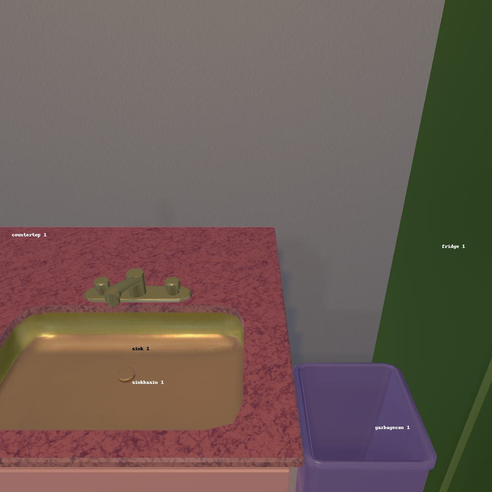

---------------------------------------------------------task: 13---------------------------------------------------------
--------------------------------------------------------------------------------------------------------------------------------------------------------------------
--------------------------------------------------------------------------------------------------------------------------------------------------------------------
Step:--------------------------------------------------------------------------0-------------------------------------------------------------------------------
----------------------------------------
VLM Prompt:
Image1:
**Instruction**
1. Analyze the provided image to identify all visible household objects, focusing on those relevant to the task description "clean some tomato and put it in garbagecan."
2. Use the analysis of the image and the task hint "The agent must find an object of the desired type, pick it up, go to a sink or a basin, clean the object with a sink or basin, and then find the correct location to place it and put it down there. The agent does not need to use soap bottle or faucet to clean the object, and the agent just needs to do action that is "clean the object with the sink or sink basin"." to answer the question: what is the most reasonable action in the choices for the task description "clean some tomato and put it in garbagecan"?
4. Decide and write the answer using the template: The answer is: (i): , where i is the real number. If there is no desired object in the image, search every place based on **Initial Observation** to find the object. And if no one is exactly correct, choose a similar answer.
**Initial Observation**
You are in the middle of a room. Looking quickly around you, you can see countertop (1-2), cabinet (1-11), garbagecan (1), toaster (1), sinkbasin (1), fridge (1), sink (1), microwave (1), drawer (1-3), stoveburner (1-4), coffeemachine (1), diningtable (1)
**Answer Choices**
(1): go to countertop 1
(2): go to cabinet 1
(3): go to cabinet 2
(4): go to cabinet 3
(5): go to garbagecan 1
(6): go to cabinet 4
(7): go to toaster 1
(8): go to sinkbasin 1
(9): go to fridge 1
(10): go to sink 1
(11): go to cabinet 5
(12): go to microwave 1
(13): go to countertop 2
(14): go to cabinet 6
(15): go to cabinet 7
(16): go to drawer 1
(17): go to stoveburner 1
(18): go to stoveburner 2
(19): go to cabinet 8
(20): go to drawer 2
(21): go to stoveburner 3
(22): go to stoveburner 4
(23): go to coffeemachine 1
(24): go to cabinet 9
(25): go to cabinet 10
(26): go to cabinet 11
(27): go to diningtable 1
(28): go to drawer 3
**Answer**
Let's think step by step by following the instructions.
----------------------------------------
----------------------------------------
Original Response:
Firstly, we need to find a tomato. The most likely place to find a tomato would be in the fridge or on the countertop where food is often prepared. However, since we don't see any tomato on the visible countertop 1, we will exclude option (1). The next reasonable location would be the fridge where fresh produce like tomatoes is typically stored. So, the agent should go to the fridge to find a tomato.
Once the agent has the tomato, the next step is to clean it. The sink and sinkbasin are both mentioned as places to clean the object, and since we can see sinkbasin 1 in the image, the agent can use it to clean the tomato.
Finally, after cleaning the tomato, the agent needs to put it in the garbagecan. The garbagecan is visible in the image, so the agent can easily go there to complete the task.
Based on the above analysis, the most reasonable actions in order would be:
- Go to the fridge to find a tomato (9)
- Clean the tomato at the sinkbasin (8)
- Put the cleaned tomato in the garbagecan (5)
However, since we need to select the most reasonable action for the task description "clean some tomato and put it in garbagecan," and we can see a sinkbasin and garbagecan but no tomato in the image, we should start by finding the tomato.
The answer is: (9): go to fridge 1.
----------------------------------------
----------------------------------------
>>> Refine Original VLM Response and Get Pure Action: go to fridge 1
----------------------------------------
-----------------------------------------------------------------
Running time: 10.677193403244019 seconds
Total Money: 7.612860000000001
-----------------------------------------------------------------
-----------------------------------------------------------------
Text Observation:You arrive at loc 8. The fridge 1 is closed.
-----------------------------------------------------------------
UNSUCCEED